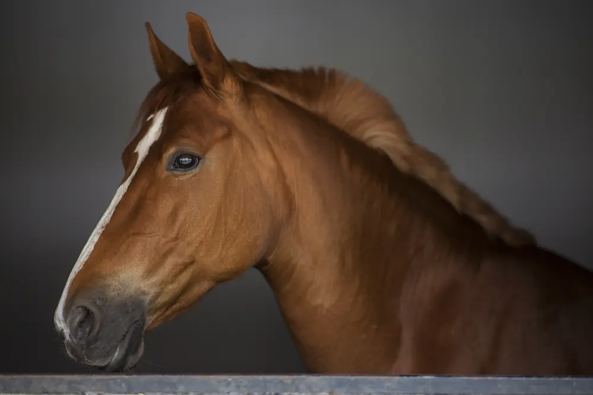
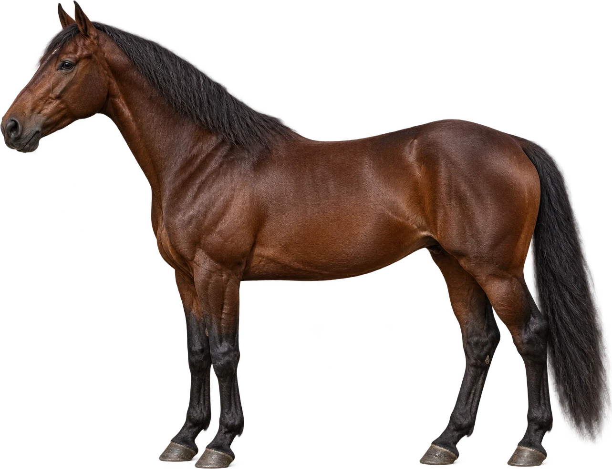
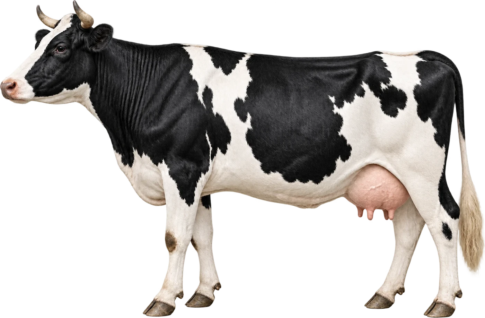
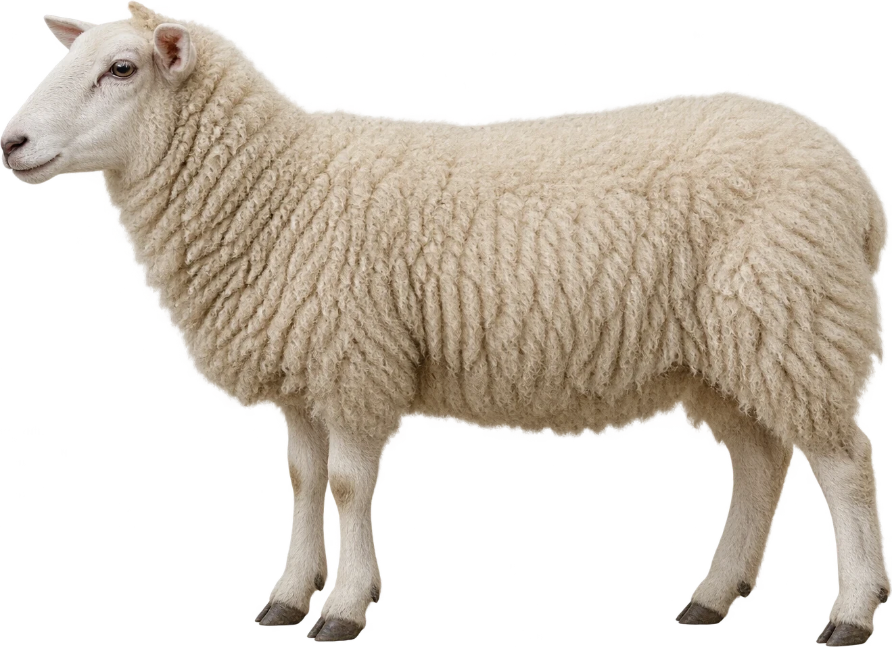
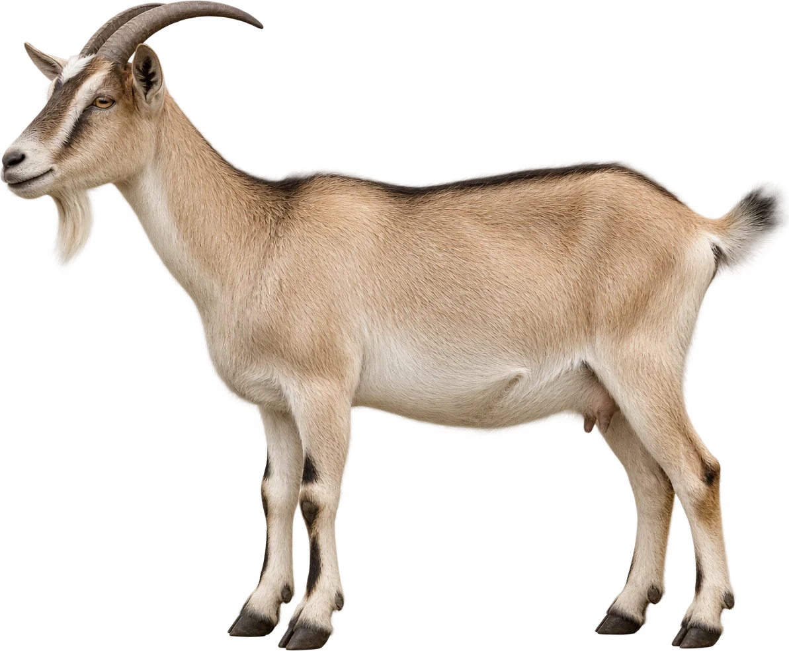
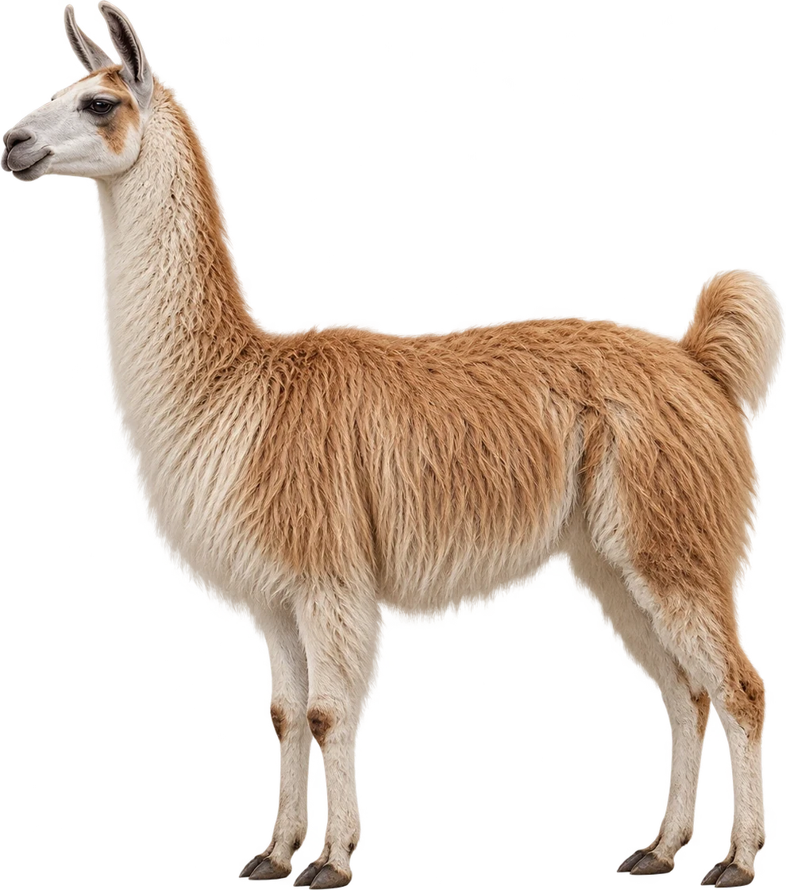
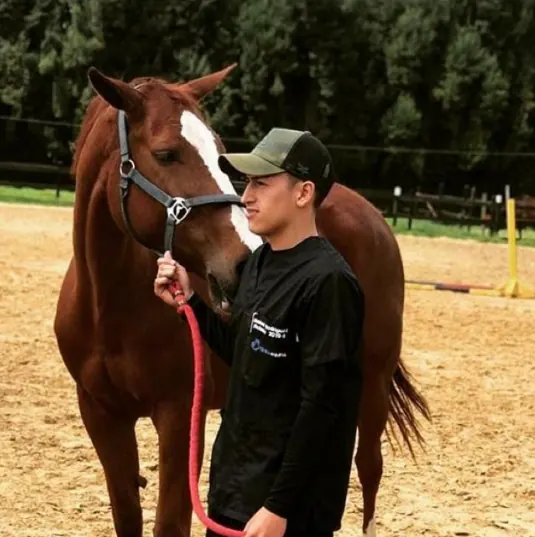
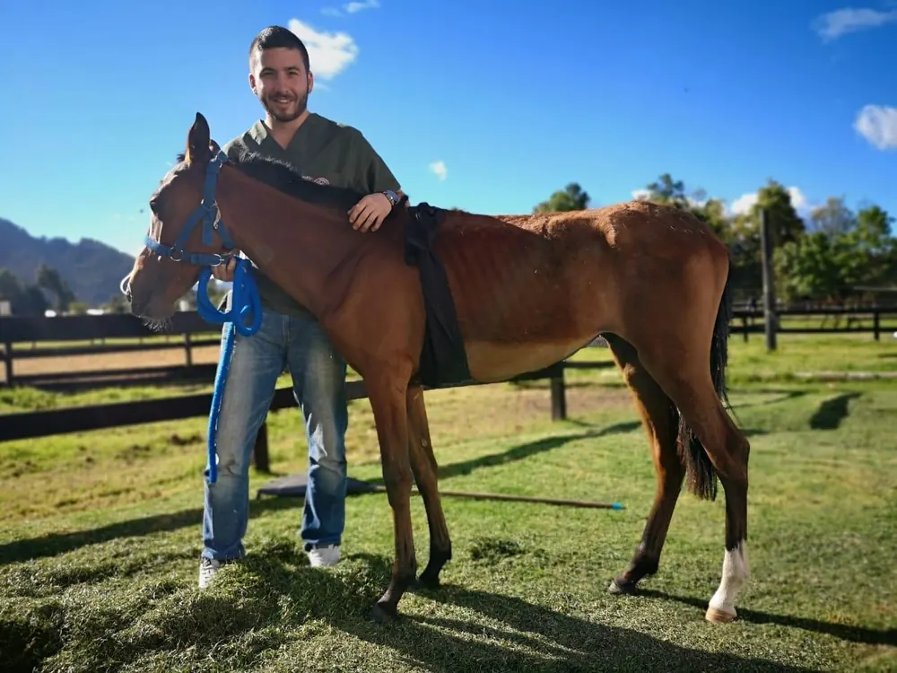
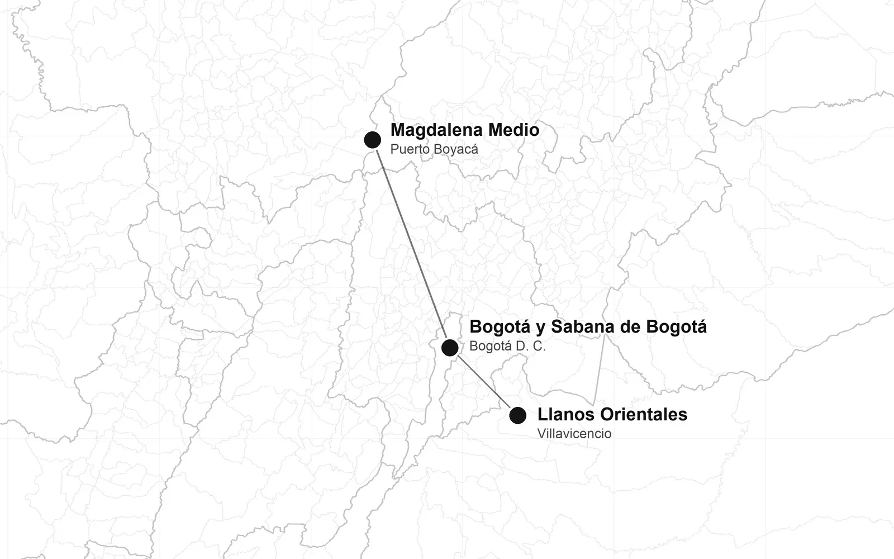

Bienestarfísico y emocional
Velamos día a día por el bienestar emocional y físico de cada paciente.

Foto del portafolio · autorización pendienteMedicina y reproducción de grandes especies
Medicina, urgencias, cirugía de tejidos blandos y reproducción para caballos, bovinos y pequeños rumiantes.
Muequetá es una empresa de servicios veterinarios diseñada para responder a las necesidades de sus pacientes y de sus propietarios.
Velamos día a día por el bienestar emocional y físico de cada paciente.
Un equipo formado en universidades colombianas, con experiencia en clínica equina y medicina de grandes animales.
Trabajamos con integridad: claridad con el propietario sobre lo que el caso necesita.





Del examen en la caballeriza a la atención en campo.
La experiencia del equipo incluye clínicas equinas en Chía (Cundinamarca) y San Pedro (Valle), y una clínica de reproducción y fertilidad equina en Chile.
Del animal individual al hato completo.
Manejo, salud y reproducción de bovinos, con el enfoque propio de cada finca.
Pequeños rumiantes, parte del portafolio.
Las ovejas hacen parte de los pequeños rumiantes que Muequetá incluye en sus consultas integrales de especies mayores.
Junto a las ovejas, el otro grupo de pequeños rumiantes.
Atención veterinaria para cabras dentro de las especies mayores del portafolio.
Llamas y alpacas.
Camélidos suramericanos, como llamas y alpacas.
Desde la medicina preventiva hasta la reproducción, el trabajo se hace donde está el animal.
Cuidar la salud del animal y del hato antes de que aparezca el problema.
Respuesta clínica cuando un animal está comprometido.
Procedimientos que no requieren quirófano, realizados donde está el animal. La viabilidad depende de cada caso.
Seguimiento reproductivo, individual y de hato.

Foto del portafolio · autorización pendienteMédico veterinario · Universidad Nacional de Colombia
Cargo por confirmarHa trabajado en el Laboratorio Clínico y la Clínica de Grandes Animales de la Universidad Nacional, en clínica equina en Chía y en la clínica de reproducción y fertilidad equina Bioteq, en Chile.

Foto del portafolio · autorización pendienteMédico veterinario zootecnista · Universidad Tecnológica de Pereira
Experiencia en clínica equina en Chía (Cundinamarca), en la clínica Equimedical de San Pedro (Valle) y en el Pueblo Viejo Country Club.
Atención en campo en estas zonas del país.
Los desplazamientos dependen de cada caso.

Escríbenos y el equipo revisa tu caso.